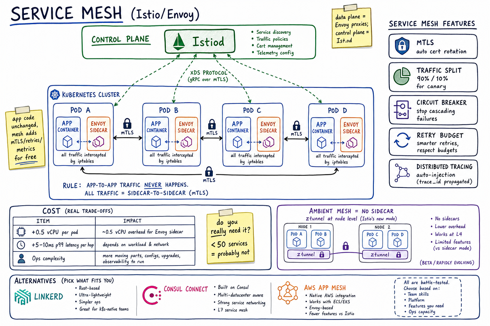

Service Mesh // Stretch
Sidecar proxy layer that handles service-to-service networking — mTLS, retries, traffic shaping, observability — outside application code. Istio + Envoy is the canonical stack. Costs CPU + complexity; pays off only above a microservice count threshold.

Kubernetes cluster with Envoy sidecars in every pod; control plane (Istiod) pushes config via xDS; mTLS between every pod; features (mTLS, traffic split, circuit breaker, retry budget, tracing); cost table; ambient mesh alternative.
01 — Identity
A service mesh is a network-layer concern moved out of the application. A small proxy (sidecar) sits next to every workload and intercepts all traffic in and out; a control plane configures all proxies centrally. The proxies provide mTLS, retries, timeouts, traffic splitting, RBAC, and auto-emitted metrics & traces — all without app code changes.
The mesh is "L7 networking as code, deployed alongside the app instead of baked into it." Application teams gain reliability + observability + zero-trust for free; the platform team owns the mesh.
01a — Core Concepts
| Concept | Meaning |
|---|---|
| Sidecar | Proxy container in every pod alongside the app; iptables redirects pod traffic through it. |
| Data plane | Set of proxies (Envoy, Linkerd-proxy) actually moving packets. |
| Control plane | Central component (Istiod, Linkerd controller) that pushes config to proxies. |
| xDS | Envoy's discovery API (CDS, EDS, LDS, RDS, ADS) the control plane speaks. |
| mTLS | Mutual TLS between proxies; transparent to apps. |
| SPIFFE / SPIRE | Workload identity spec + reference implementation; certs by SPIFFE URI. |
| VirtualService / DestinationRule | Istio CRDs for routing + traffic policy. |
| AuthorizationPolicy | Allow/deny rules at L7 between services. |
| Ambient mesh | Istio's no-sidecar mode; per-node ztunnel + optional L7 waypoint. |
01b — API / Control Surface (Istio examples)
# Traffic split for canary
apiVersion: networking.istio.io/v1beta1
kind: VirtualService
metadata: { name: orders }
spec:
hosts: [orders]
http:
- route:
- destination: { host: orders, subset: stable } # 90%
weight: 90
- destination: { host: orders, subset: canary } # 10%
weight: 10
# Outlier ejection + circuit breaker
apiVersion: networking.istio.io/v1beta1
kind: DestinationRule
metadata: { name: orders }
spec:
host: orders
trafficPolicy:
connectionPool:
tcp: { maxConnections: 100 }
http: { http2MaxRequests: 1000, maxRequestsPerConnection: 10 }
outlierDetection:
consecutive5xxErrors: 5
interval: 30s
baseEjectionTime: 30s
maxEjectionPercent: 50
# AuthZ: only billing can call orders.checkout
apiVersion: security.istio.io/v1beta1
kind: AuthorizationPolicy
metadata: { name: orders-checkout }
spec:
selector: { matchLabels: { app: orders } }
rules:
- from: [ { source: { principals: ["cluster.local/ns/billing/sa/billing"] } } ]
to: [ { operation: { paths: ["/checkout"] } } ]
02 — When to Use / NOT Use
| Use a mesh when | Don't use a mesh when |
|---|---|
| 50+ microservices on K8s talking over the network | Monolith or <15 services — just use TLS + an HTTP client library |
| Need zero-trust mTLS without app changes | Mesh is the wrong tool for north-south traffic; use an API gateway instead |
| Canary releases + traffic splitting are required | You can't afford the CPU/RAM tax per pod |
| Per-service-pair AuthZ at L7 | Latency budget is tight (each hop adds 5-10ms p99) |
| Polyglot environment (many languages) | You don't have a platform team to run it |
| Need consistent observability across many languages | You're early-stage and over-engineering risks shipping the actual product |
Most teams arrive at a mesh from the "we keep writing the same Hystrix/retry/auth code in 6 languages" pain. If you haven't felt that, you don't need it yet.
03 — Architecture
K8s cluster:
┌────────── CONTROL PLANE ──────────┐
│ Istiod (Pilot+Citadel+Galley) │
│ - service discovery │
│ - cert issuance │
│ - config compile + push (xDS) │
│ - policy distribution │
└───────────┬──────────────────┬────┘
| xDS gRPC | xDS gRPC
v v
┌─────── POD A ────────┐ ┌─────── POD B ─────────┐
│ app container │ │ app container │
│ | (localhost) │ │ | (localhost) │
│ v │ │ v │
│ envoy sidecar <------> envoy sidecar │
│ - mTLS │ │ - mTLS │
│ - retries │ │ - retries │
│ - circuit break │ │ - circuit break │
└──────────────────────┘ └───────────────────────┘
| iptables redirects pod traffic through sidecar
| apps connect to localhost; sidecar handles network
Sidecar is injected automatically (admission webhook). Apps see plaintext on localhost; everything between pods is mTLS-encrypted. App identity = ServiceAccount = SPIFFE URI.
04 — mTLS & Identity
- Per-workload certs — each service account gets an X.509 cert via SPIFFE/SPIRE. Identity =
spiffe://cluster.local/ns/billing/sa/billing-sa - Short TTL — certs rotate every 24h (often shorter); compromise window bounded
- Strict / permissive / disabled mode per namespace (PeerAuthentication CRD)
- Migration — permissive mode allows both plaintext + mTLS during rollout
- End-user JWT propagation — mesh verifies JWT at ingress, passes principal to downstream policies
Result: zero-trust network with effectively no app code involvement. Every call is authenticated and encrypted; the application sees plaintext localhost as if it's 1999.
05 — Traffic Management
| Feature | How |
|---|---|
| Canary / blue-green | Weighted routing across stable + canary subset |
| Header-based routing | Send x-debug-user: dev traffic to v2 only |
| Fault injection | Inject delays or 503s for chaos testing in staging |
| Mirroring | Send 100% of traffic to stable AND shadow-copy to canary; compare |
| Locality-aware load balancing | Prefer same-zone backends; fall back to other zones on failure |
| Egress control | ServiceEntry CRD allowlists external destinations; otherwise blocked |
06 — Resilience Features
| Feature | What |
|---|---|
| Retries | Configure attempts, perTryTimeout, retriableStatusCodes |
| Retry budget | Cap total retries to X% of original requests — avoids amplification |
| Circuit breaker | connectionPool limits + outlierDetection eject unhealthy hosts |
| Timeout | Per-route HTTP timeout |
| Outlier ejection | Remove hosts with consecutive5xxErrors / slow latency for baseEjectionTime |
| Rate limiting | Local rate limit per sidecar + global via Envoy ratelimit service |
See Failure Modes for the underlying patterns. The mesh ships them as config instead of code.
07 — Observability
- Sidecar emits RED metrics per route + per source/dest pair (Prometheus, Datadog)
- Auto-distributes trace context (B3 / W3C) and creates spans for in/out hops — app only needs to propagate headers
- Access logs in JSON to stdout; usually shipped via Fluent Bit / Vector
- Service graph auto-discovered (Kiali, Datadog Service Map)
Tying back to Observability: a mesh gives you the entire layer for free, regardless of language. Worth it if you have 5+ languages in production.
08 — Sidecar vs Ambient Mesh
| Sidecar (classic) | Ambient (Istio 1.18+) | |
|---|---|---|
| Where Envoy runs | Per pod | Per node (ztunnel) + optional waypoint pod |
| Resource cost | ~50-200 MB + 0.5 vCPU per pod | Much lower; shared per node |
| L4 features | ztunnel handles mTLS + L4 | Same |
| L7 features | Always present | Only on routes via a "waypoint" proxy — pay for what you use |
| Maturity | Battle-tested | Beta-to-GA, evolving |
| Restart blast radius | Restart pod for sidecar upgrade | Upgrade ztunnel as DaemonSet, no pod restart |
Ambient is the future for many shops; sidecar still wins where ultra-fine-grained L7 policy is needed everywhere.
09 — Operational Concerns
- CPU overhead: +0.5 vCPU per pod is typical for sidecar; 1k pods = 500 vCPU just for proxies.
- Latency tax: 5-10 ms p99 added per hop; deep call chains feel it.
- Upgrade path: control plane + each sidecar; needs careful rollout (sidecar restart = pod restart for app).
- Debugging is harder — "is it the app, the sidecar, or the network?" gets asked daily.
- Multi-cluster + multi-region — Istio supports federated mesh; complex setup.
- Egress policy — restricting external calls helps security but makes incident debugging harder.
- Init container vs CNI plugin — iptables setup. Istio offers Istio CNI to avoid privileged init.
- Pod startup races — app starts before sidecar ready → first calls fail; needs
holdApplicationUntilProxyStarts.
10 — Real-World Usage
| Org | Notes |
|---|---|
| Lyft | Created Envoy; deep production use |
| Anthos Service Mesh = managed Istio | |
| Netflix | Had their own (Zuul, Eureka, Hystrix) pre-mesh |
| Airbnb | Mix of Envoy + custom tooling |
| Stripe | Envoy + custom control plane (no Istio) |
| HashiCorp Consul Connect | Consul-native mesh; popular outside K8s shops |
11 — Alternatives
| Alternative | When |
|---|---|
| Library-based (Hystrix, Resilience4j, Polly) | Single language stack; cheap; tight coupling |
| API gateway only (NGINX, Kong, Envoy as gateway) | North-south traffic only; no east-west enforcement |
| Linkerd | Rust-based, smaller footprint, simpler; less feature-rich than Istio |
| Consul Connect | Works on bare VMs + K8s |
| AWS App Mesh | Managed Envoy on ECS / EKS |
| Cilium Service Mesh | eBPF-based, sidecar-less; promising |
| Custom Envoy + xDS | Stripe's path; full control, big platform investment |
12 — Interview Q&A
What is a service mesh?
Why mTLS in the mesh instead of just JWTs?
What's the data plane vs control plane split?
When would you NOT use a service mesh?
How does Istio do canary deploys?
What's the latency cost?
How is config pushed to all the proxies?
What's the difference between Istio and Linkerd?
What's ambient mesh and why does it matter?
How do you authenticate end users through a mesh?
How do you debug a request that's failing somewhere in the mesh?
istioctl proxy-status + istioctl proxy-config show what config each Envoy thinks it has. The hardest debugging is "is the app or the sidecar saying no?" — access logs are the first stop.SDE-2 vs SDE-3 differentiator?
| SDE-2 | SDE-3 |
|---|---|
| "Istio gives you mTLS + retries by injecting Envoy" | + control plane vs data plane vs xDS, SPIFFE identity, retry budgets vs naive retries, outlier ejection mechanics, ambient mesh trade-offs, sidecar resource math (vCPU/RAM/latency), "do you need it" framing, library vs gateway vs mesh decision, multi-cluster + multi-region complexity |